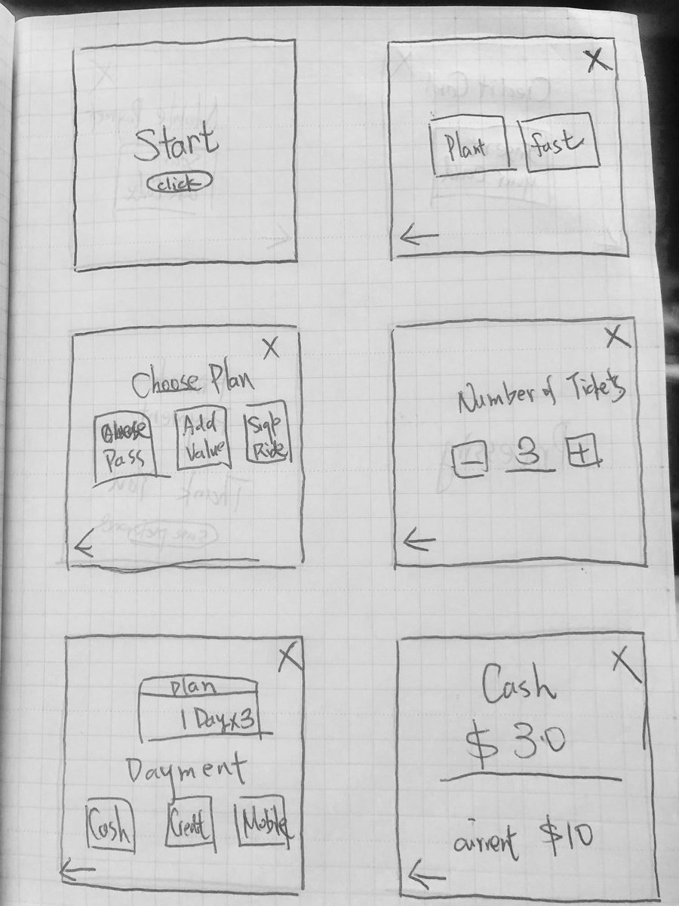
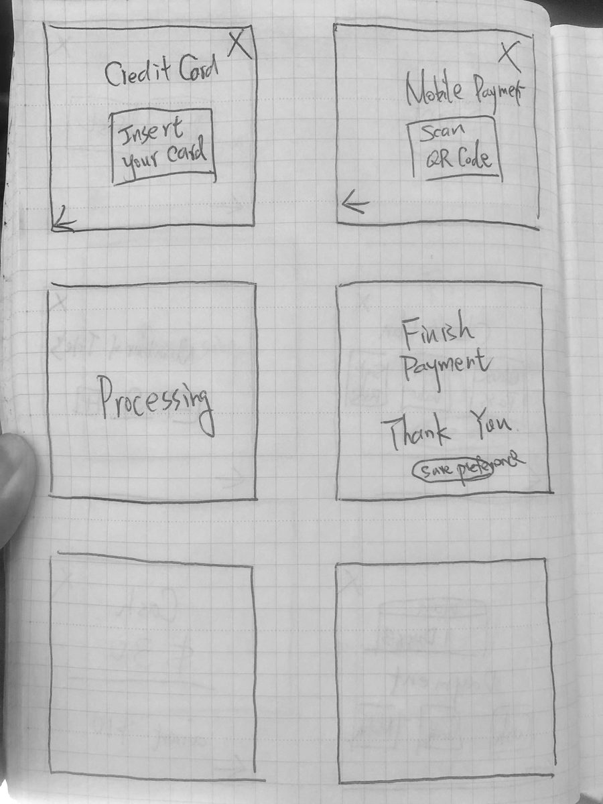
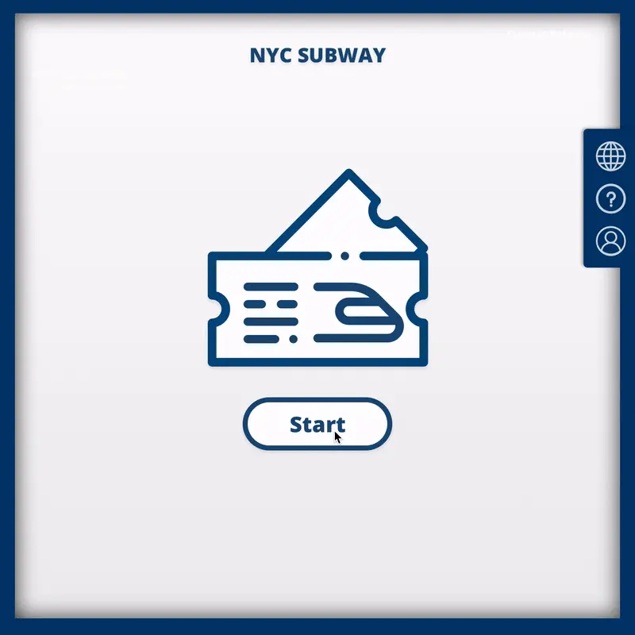
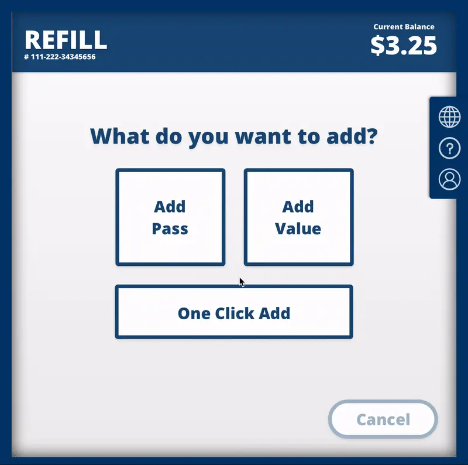
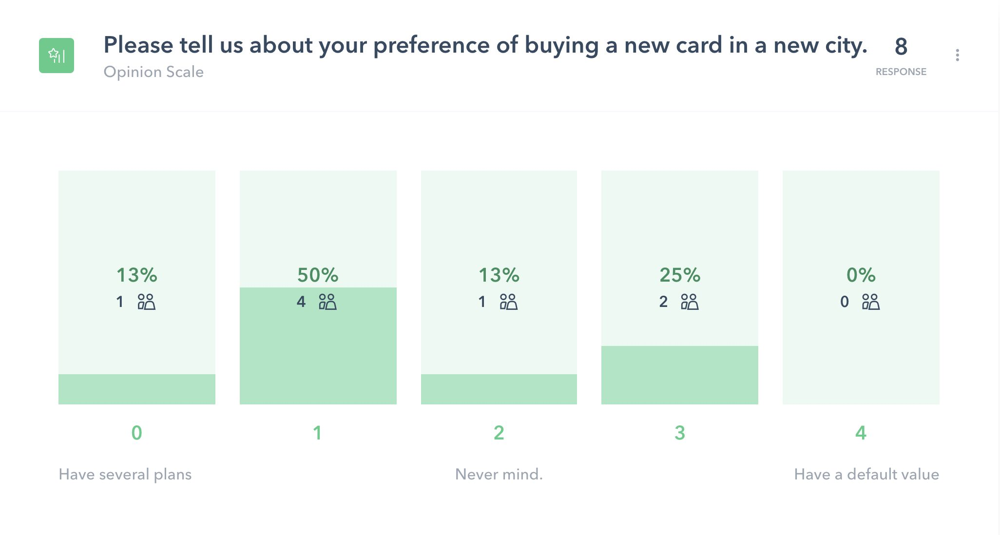
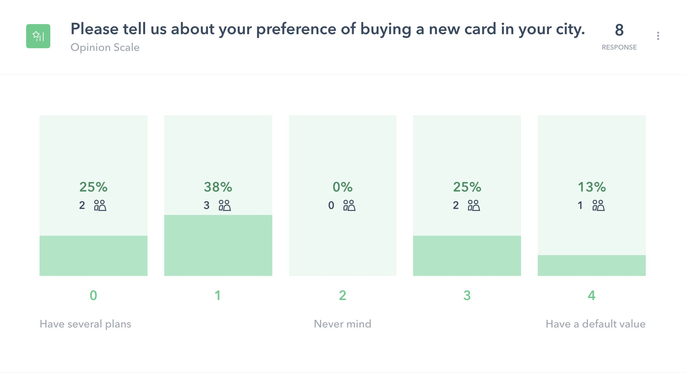

04 Design & Validate
Sketch Fast, Test What Matters
Paper first — a full screen-by-screen pass in pencil — then hi-fi only where evaluation needed it. The prototype went straight back to users: click heatmaps on the critical payment step, and a preference survey on the plan question.




Usability · Click Heatmaps + Survey
Let Riders Vote With Their Fingers
Heatmaps on the payment screen confirmed the three-method layout worked — card dominated, but cash and mobile earned their buttons. The 8-rider survey split exactly as the research predicted: in a new city people want a default value; in their own city they want their plans. "The simplest would be a default value for new clients," one tester wrote — the design already agreed.


